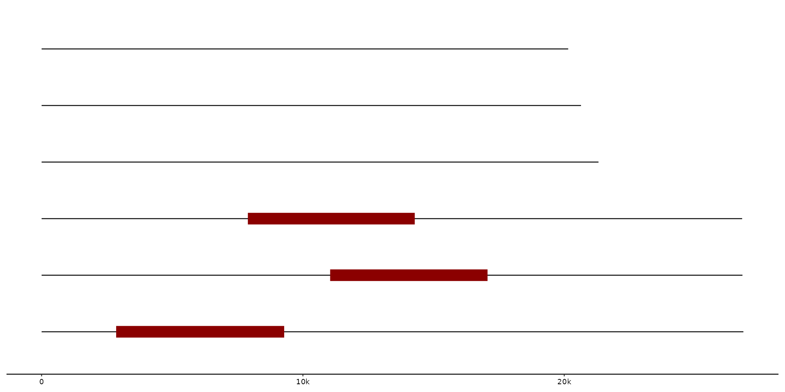
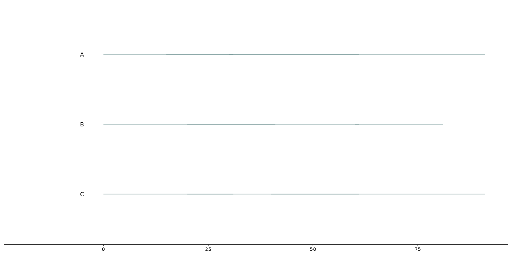
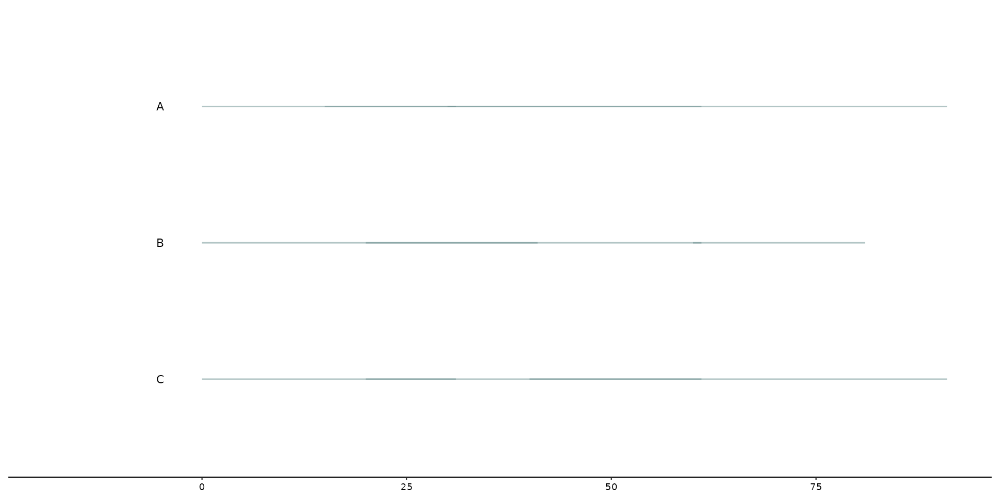

Geom_feat allows the user to draw (additional) features to the plot/graph. For example, specific regions within a sequence can be highlighted by color, size, etc.. The function uses data from the feats' track.
geom_feat(
mapping = NULL,
data = feats(),
stat = "identity",
position = "pile",
na.rm = FALSE,
show.legend = NA,
inherit.aes = TRUE,
...
)Arguments
- data
feat_layout
- position
describes how the position of different plotted features are adjusted. By default it uses
"pile", but different ggplot2 position adjustments, such as"identityor"jitter"can be used as well.
Details
geom_feat uses ggplot2::geom_segment under the hood. As a result, different aesthetics such as alpha, linewidth, color, etc.
can be called upon to modify the data visualization.
Examples
# Plotting data from the feats' track with adjusted linewidth and color
gggenomes(seqs = emale_seqs, feats = emale_ngaros) +
geom_seq() +
geom_feat(linewidth = 5, color = "darkred")

# Geom_feat can be called several times as well, when specified what data should be used
gggenomes(seqs = emale_seqs, feats = list(emale_ngaros, emale_tirs)) +
geom_seq() +
geom_feat(linewidth = 5, color = "darkred") + #uses first feature track
geom_feat(data = feats(emale_tirs))
 # Additional notes to feats can be added with functions such as: geom_feat_note / geom_feat_text
gggenomes(seqs = emale_seqs, feats = list(emale_ngaros, emale_tirs)) +
geom_seq() +
geom_feat(color = "darkred") +
geom_feat(data=feats(emale_tirs), color = "darkblue") +
geom_feat_note(data = feats(emale_ngaros), label="repeat region", size = 4)
# Different position adjustments with a simple dataset
exampledata <- tibble(
seq_id = c(rep("A", 3), rep("B", 3), rep("C", 3)),
start = c(0, 30, 15, 40, 80, 20, 30, 50, 70),
end = c(30, 90, 60, 60, 100, 80, 60, 90, 120))
gggenomes(feats = exampledata) +
geom_feat(position = "identity", alpha = 0.5, linewidth = 0.5) +
geom_bin_label()
#> No seqs provided, inferring seqs from feats

# Additional notes to feats can be added with functions such as: geom_feat_note / geom_feat_text
gggenomes(seqs = emale_seqs, feats = list(emale_ngaros, emale_tirs)) +
geom_seq() +
geom_feat(color = "darkred") +
geom_feat(data=feats(emale_tirs), color = "darkblue") +
geom_feat_note(data = feats(emale_ngaros), label="repeat region", size = 4)
# Different position adjustments with a simple dataset
exampledata <- tibble(
seq_id = c(rep("A", 3), rep("B", 3), rep("C", 3)),
start = c(0, 30, 15, 40, 80, 20, 30, 50, 70),
end = c(30, 90, 60, 60, 100, 80, 60, 90, 120))
gggenomes(feats = exampledata) +
geom_feat(position = "identity", alpha = 0.5, linewidth = 0.5) +
geom_bin_label()
#> No seqs provided, inferring seqs from feats
